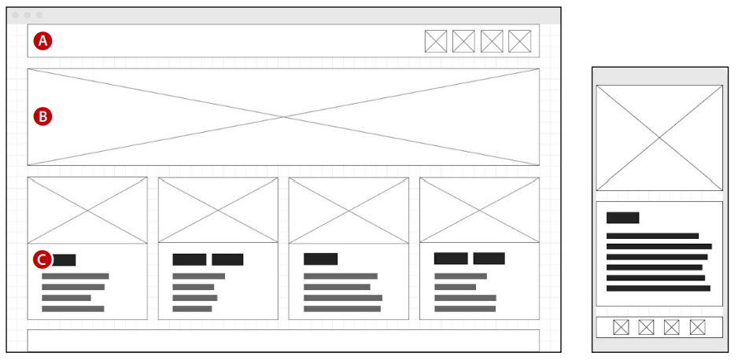

Wireframes

Grundstrukturen im Webdesign: Das skizzierte Layout
Ein Wireframe, auch als Drahtgitter bezeichnet, spielt eine bedeutende Rolle in Grafiken und CAD-Anwendungen. Es bietet eine Vorschau einer Grafik ohne Farben, Texturen oder variable Linienstärken, konzentriert sich stattdessen ausschließlich auf Konturlinien.
Im Webdesign werden Wireframes für das Layout von Webanwendungen genutzt. Dabei wird üblicherweise folgende Symbolik verwendet:
- Das Layout einer Webanwendung wird durch geometrische Formen wie Vierecke, Rechtecke oder Kreise mit einer feinen schwarzen Kontur dargestellt (A).
- Rahmen für Bilder oder Grafiken erhalten zusätzlich zwei diagonale Linien (B).
- Text wird durch schwarze oder graue Balken dargestellt, deren Dicke der späteren Schriftstärke entspricht (C).
Die Erstellung von Wireframes kann mit Grafiksoftware wie Adobe Illustrator erfolgen. Alternativ dazu gibt es im Internet verschiedene Tools, mit denen Sie Wireframes generieren können. Die gezeigten Screenshots präsentieren Wireframes, die mit dem schlichten Webtool wireframe.cc erstellt wurden. In der kostenlosen Variante können Sie Wireframes allerdings nur in der Cloud speichern, jedoch nicht als Dateien herunterladen.
